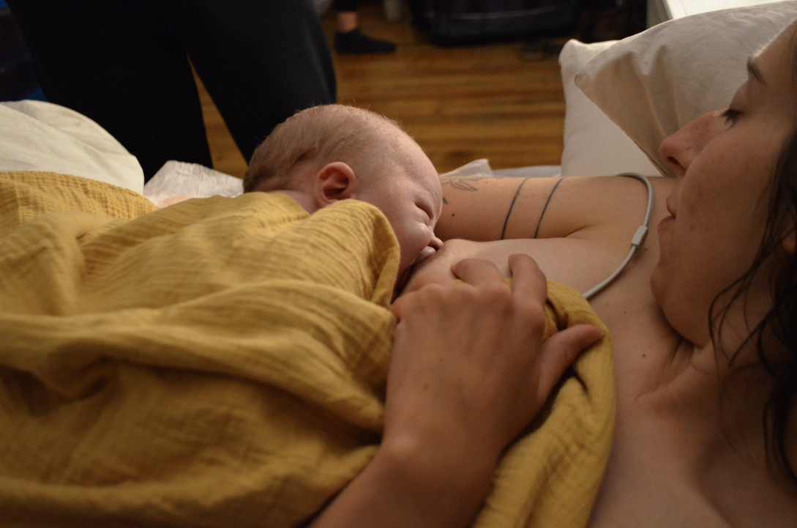

Nurtured Mothers
When a baby is born,
so is a mother.
Traditionally, (across most of the world) birth and postpartum were rites of passage. Throughout pregnancy, birth, and beyond, women were celebrated and supported by their communities.
You deserve this care.